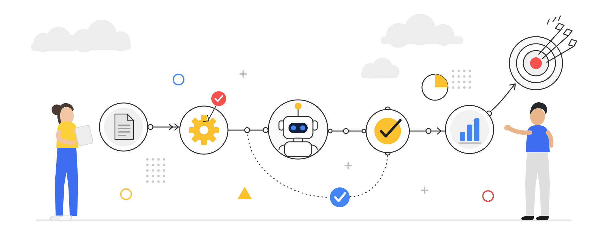
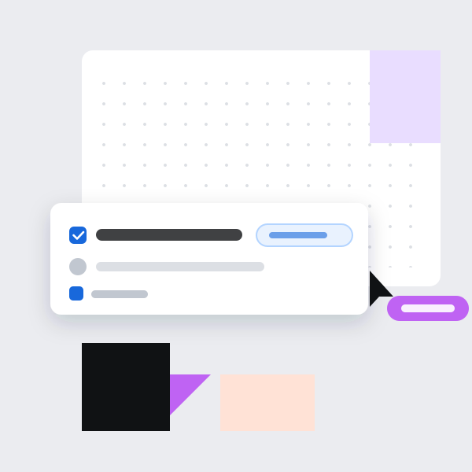

Automatisierungen, die für dich arbeiten
Wir bauen für kleine und mittlere Betriebe die Abläufe um, die jede Woche Stunden kosten – damit sie von allein laufen.
- Läuft mit den Tools, die du schon hast
- Wir bauen und betreuen es – du musst nichts lernen
- Erst der Prozesscheck, dann ein konkretes Angebot

Was wir für dich automatisieren
Vier Bereiche, in denen sich der Aufwand bei den meisten Betrieben am schnellsten bezahlt macht.
-
Anfragen und E-Mails
Eingehende Anfragen werden gelesen, einsortiert und beantwortet. Kundendaten landen dort, wo sie hingehören – ohne dass jemand sie abtippt.
-

Angebote und Aufträge
Aus einer Anfrage wird ein Angebot, aus der Zusage ein Auftrag. Termine, Aufgaben und Bestätigungen entstehen automatisch mit.
-
Dokumente und Daten
Rechnungen, Lieferscheine und Formulare werden ausgelesen und weiterverarbeitet. Kein Abtippen, keine Zahlendreher.
-
Auswertung und Überblick
Zahlen aus deinen Systemen an einem Ort. Du siehst, wo der Betrieb steht, ohne dir die Angaben zusammenzusuchen.
So läuft die Zusammenarbeit
Kein langes Vorprojekt. Du weisst früh, woran du bist.
-
Prozesscheck
Du beschreibst deinen Ablauf in wenigen Minuten. Du siehst sofort, wo sich Automatisierung lohnt – kostenlos und unverbindlich.
-
Angebot
Wir schauen gemeinsam auf das Ergebnis und schlagen vor, womit wir anfangen. Aufwand und Preis stehen schriftlich fest, bevor wir etwas bauen.
-
Umsetzung
Wir bauen die Automatisierung, verbinden deine Tools und begleiten den Start. Läuft sie, bleiben wir für Anpassungen ansprechbar.
Häufige Fragen
Müssen wir unsere Software wechseln?
Nein. Wir arbeiten mit dem, was bei dir im Einsatz ist, und verbinden die vorhandenen Programme miteinander. Ein Wechsel schlagen wir nur vor, wenn er dir wirklich etwas spart.
Sind wir dafür nicht zu klein?
Gerade kleine Betriebe merken es am deutlichsten: Wo wenige Leute vieles gleichzeitig machen, fällt jede eingesparte Stunde auf. Schon ein einzelner automatisierter Ablauf lohnt sich.
Was kostet das?
Das hängt davon ab, wie viel automatisiert wird. Du bekommst vor dem Start ein schriftliches Angebot. Solange du nicht zusagst, entstehen dir keine Kosten.
Was passiert mit unseren Daten?
Deine Angaben nutzen wir für die Durchführung des Prozesschecks und – wenn du uns kontaktierst – zur Bearbeitung deiner Anfrage. Für Hosting, KI-Analyse und E-Mail-Versand setzen wir sorgfältig ausgewählte Dienstleister ein. Details zu Empfängern, Datenübermittlungen und Löschfristen findest du in unserer Datenschutzerklärung.
Sieh in zwei Minuten, was bei dir drinliegt
Der Prozesscheck zeigt dir, welche Schritte sich automatisieren lassen und was das ungefähr bringt. Ohne Registrierung, ohne Verpflichtung.
Kostenlosen Prozesscheck starten